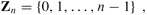
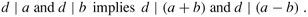
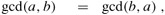
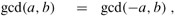
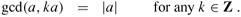
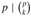

|
|
< Day Day Up > |
|
This section provides a brief review of notions from elementary number theory concerning the set Z = {..., -2, -1, 0, 1, 2,..} of integers and the set N = {0, 1, 2, ...} of natural numbers.
The notion of one integer being divisible by another is a central one in the theory of numbers. The notation d | a (read "d divides a") means that a = kd for some integer k. Every integer divides 0. If a > 0 and d | a, then |d| ≤ |a|. If d | a, then we also say that a is a multiple of d. If d does not divide a, we write d ∤ a.
If d | a and d ≥ 0, we say that d is a divisor of a. Note that d | a if and only if -d | a, so that no generality is lost by defining the divisors to be nonnegative, with the understanding that the negative of any divisor of a also divides a. A divisor of an integer a is at least 1 but not greater than |a|. For example, the divisors of 24 are 1, 2, 3, 4, 6, 8, 12, and 24.
Every integer a is divisible by the trivial divisors 1 and a. Nontrivial divisors of a are also called factors of a. For example, the factors of 20 are 2, 4, 5, and 10.
An integer a > 1 whose only divisors are the trivial divisors 1 and a is said to be a prime number (or, more simply, a prime). Primes have many special properties and play a critical role in number theory. The first 20 primes, in order, are
2, 3, 5, 7, 11, 13, 17, 19, 23, 29, 31, 37, 41, 43, 47, 53, 59, 61, 67, 71.
Exercise 31.1-1 asks you to prove that there are infinitely many primes. An integer a > 1 that is not prime is said to be a composite number (or, more simply, a composite). For example, 39 is composite because 3 | 39. The integer 1 is said to be a unit and is neither prime nor composite. Similarly, the integer 0 and all negative integers are neither prime nor composite.
Given an integer n, the integers can be partitioned into those that are multiples of n and those that are not multiples of n. Much number theory is based upon a refinement of this partition obtained by classifying the nonmultiples of n according to their remainders when divided by n. The following theorem is the basis for this refinement. The proof of this theorem will not be given here (see, for example, Niven and Zuckerman [231]).
For any integer a and any positive integer n, there are unique integers q and r such that 0 ≤ r < n and a = qn + r.
The value q = ⌊a/n⌋ is the quotient of the division. The value r = a mod n is the remainder (or residue) of the division. We have that n | a if and only if a mod n = 0.
The integers can be divided into n equivalence classes according to their remainders modulo n. The equivalence class modulo n containing an integer a is
[a]n = {a + kn : k ∈ Z}.
For example, [3]7 = {..., -11, -4, 3, 10, 17, ...}; other denotations for this set are [-4]7 and [10]7. Using the notation defined on page 52, we can say that writing a ∈ [b]n is the same as writing a ≡ b (mod n). The set of all such equivalence classes is
One often sees the definition
| (31.2) |  |
which should be read as equivalent to equation (31.1) with the understanding that 0 represents [0]n, 1 represents [1]n, and so on; each class is represented by its least nonnegative element. The underlying equivalence classes must be kept in mind, however. For example, a reference to -1 as a member of Zn is a reference to [n - 1]n, since -1 ≡ n - 1 (mod n).
If d is a divisor of a and d is also a divisor of b, then d is a common divisor of a and b. For example, the divisors of 30 are 1, 2, 3, 5, 6, 10, 15, and 30, and so the common divisors of 24 and 30 are 1, 2, 3, and 6. Note that 1 is a common divisor of any two integers.
An important property of common divisors is that
| (31.3) |  |
More generally, we have that
for any integers x and y. Also, if a | b, then either |a| ≤ |b| or b = 0, which implies that
The greatest common divisor of two integers a and b, not both zero, is the largest of the common divisors of a and b; it is denoted gcd(a, b). For example, gcd(24, 30) = 6, gcd(5, 7) = 1, and gcd(0, 9) = 9. If a and b are not both 0, then gcd(a, b) is an integer between 1 and min(|a|, |b|). We define gcd(0, 0) to be 0; this definition is necessary to make standard properties of the gcd function (such as equation (31.9) below) universally valid.
The following are elementary properties of the gcd function:
| (31.6) |  |
| (31.7) |  |
| (31.10) |  |
The following theorem provides an alternative and useful characterization of gcd(a, b).
If a and b are any integers, not both zero, then gcd(a, b) is the smallest positive element of the set {ax + by : x, y ∈ Z} of linear combinations of a and b.
Proof Let s be the smallest positive such linear combination of a and b, and let s = ax + by for some x, y ∈ Z. Let q = ⌊a/s⌋. Equation (3.8) then implies
|
a mod s |
= |
a - qs |
|
= |
a - q(ax + by) |
|
|
= |
a (1 - qx) + b(-qy), |
and so a mod s is a linear combination of a and b as well. But, since a mod s < s, we have that a mod s = 0, because s is the smallest positive such linear combination. Therefore, s | a and, by analogous reasoning, s | b. Thus, s is a common divisor of a and b, and so gcd(a, b) ≥ s. Equation (31.4) implies that gcd(a, b) | s, since gcd(a, b) divides both a and b and s is a linear combination of a and b. But gcd(a, b) | s and s > 0 imply that gcd(a, b) ≤ s. Combining gcd(a, b) ≥ s and gcd(a, b) ≤ s yields gcd(a, b) = s; we conclude that s is the greatest common divisor of a and b.
For any integers a and b, if d | a and d | b then d | gcd(a, b).
Proof This corollary follows from equation (31.4), because gcd(a, b) is a linear combination of a and b by Theorem 31.2.
For all integers a and b and any nonnegative integer n,
gcd(an, bn) = n gcd(a, b).
Proof If n = 0, the corollary is trivial. If n > 0, then gcd(an, bn) is the smallest positive element of the set {anx + bny}, which is n times the smallest positive element of the set {ax + by}.
For all positive integers n, a, and b, if n | ab and gcd(a, n) = 1, then n | b.
Proof The proof is left as Exercise 31.1-4.
Two integers a, b are said to be relatively prime if their only common divisor is 1, that is, if gcd(a, b) = 1. For example, 8 and 15 are relatively prime, since the divisors of 8 are 1, 2, 4, and 8, while the divisors of 15 are 1, 3, 5, and 15. The following theorem states that if two integers are each relatively prime to an integer p, then their product is relatively prime to p.
For any integers a, b, and p, if both gcd(a, p) = 1 and gcd(b, p) = 1, then gcd(ab, p) = 1.
Proof It follows from Theorem 31.2 that there exist integers x, y, x′, and y′ such that
|
ax + py |
= |
1 , |
|
bx′+ py′ |
= |
1 . |
Multiplying these equations and rearranging, we have
ab(x x′) + p(ybx′ + y′ax + pyy′) = 1.
Since 1 is thus a positive linear combination of ab and p, an appeal to Theorem 31.2 completes the proof.
We say that integers n1, n2, ..., nk are pairwise relatively prime if, whenever i ≠ j, we have gcd(ni, nj) = 1.
An elementary but important fact about divisibility by primes is the following.
For all primes p and all integers a, b, if p | ab, then p | a or p | b (or both).
Proof Assume for the purpose of contradiction that p | ab but that p ∤ a and p ∤ b. Thus, gcd(a, p) = 1 and gcd(b, p) = 1, since the only divisors of p are 1 and p, and by assumption p divides neither a nor b. Theorem 31.6 then implies that gcd(ab, p) = 1, contradicting our assumption that p | ab, since p | ab implies gcd(ab, p) = p. This contradiction completes the proof.
A consequence of Theorem 31.7 is that an integer has a unique factorization into primes.
A composite integer a can be written in exactly one way as a product of the form
where the pi are prime, p1 < p2 < ··· < pr, and the ei are positive integers.
Proof The proof is left as Exercise 31.1-10.
As an example, the number 6000 can be uniquely factored as 24 · 3 · 53.
Prove that there are infinitely many primes. (Hint: how that none of the primes p1, p2, ..., pk divide (p1 p2 ··· pk) + 1.)
Prove that if p is prime and 0 < k < p, then . Conclude that for all integers a, b, and primes p,
(a + b)p ≡ ap + bp (mod p).
Prove that if a and b are any integers such that a | b and b > 0, then
(x mod b) mod a = x mod a
for any x. Prove, under the same assumptions, that
x ≡ y mod b) implies x ≡ y (mod a)
for any integers x and y.
Show that the gcd operator is associative. That is, prove that for all integers a, b, and c,
gcd(a, gcd(b, c)) = gcd(gcd(a, b), c).
Give efficient algorithms for the operations of dividing a β-bit integer by a shorter integer and of taking the remainder of a β-bit integer when divided by a shorter integer. Your algorithms should run in time O(β2).
Give an efficient algorithm to convert a given β-bit (binary) integer to a decimal representation. Argue that if multiplication or division of integers whose length is at most β takes time M(β), then binary-to-decimal conversion can be performed in time Θ(M(β) lg β). (Hint: Use a divide-and-conquer approach, obtaining the top and bottom halves of the result with separate recursions.)
|
|
< Day Day Up > |
|